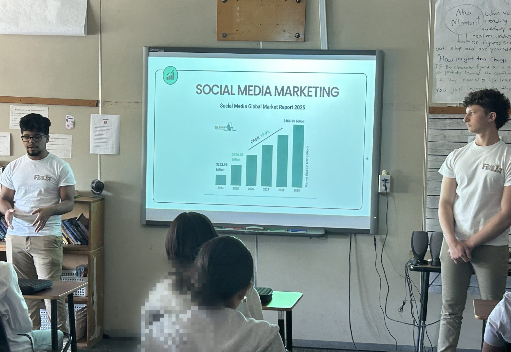

Futures Financials
Aren Inan
Aren is a senior at Bergen County Technical High School in Teterboro, studying in the Financial Technology Academy. He serves as the Chief Financial Officer of Futures Financials, joining as a founding officer when the organization began in 2022. Aren helped build and develop the organization’s staple pop culture core in the curriculum, and also developed and created the organization’s website.
Aren’s work centers on financial markets, economics, public policy, and progressing humanitarian relief. Beyond Futures Financials, he is involved in several organizations, notably serving as the Chief Operating Officer of the Financial Literacy for Youth (FLY) Initiative, Vice President of the New Jersey Juniors Chapter of the Society for Orphaned Armenian Relief (SOAR), and a Global Ambassador & Economics Researcher at FinMango. His work has been recognized by several organizations, including Future Business Leaders of America (FBLA), Junior Achievement USA, the Global Recognition Awards, and more. Currently, he is gaining professional experience at an investment management and financial advisory firm, interning in the Wealth Management department.
Aren’s commitment to advancing financial health comes from growing up in an immigrant household. Seeing firsthand how systemic and cultural barriers lead to a lack of knowledge in families, he sets to close that gap through Futures Financials. He aspires to give students their own unique definition of money, and plans to pursue a career that combines finance with public policy.
Connect on LinkedIn